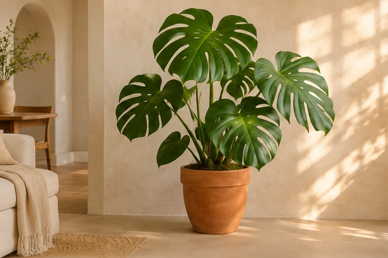
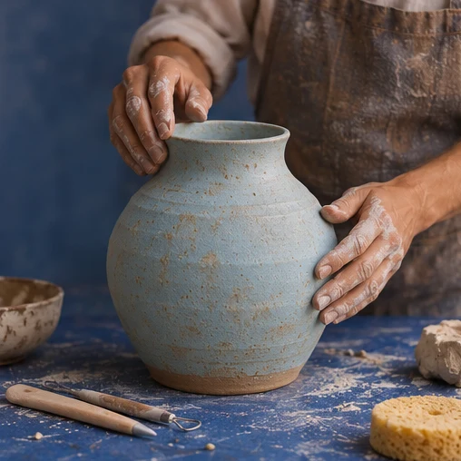

Flora Studio
Landing page para uma marca fictícia de plantas para apartamento. Feita com HTML e CSS.
Ver a Flora StudioProjetos de design e desenvolvimento web por Duda Carvalho.

Landing page para uma marca fictícia de plantas para apartamento. Feita com HTML e CSS.
Ver a Flora Studio
Espresso, coados e pães de fermentação natural para uma manhã sem pressa.
Ver a página Café Origem
Pilates em pequenos grupos, com acompanhamento de perto e exercícios adaptados à sua prática.
Ver a página Studio Eixo
Um painel demonstrativo para acompanhar receita, pedidos e ticket médio em um só lugar.
Ver a página Nexo Dados
Uma cabana na Serra do Cipó para quem quer trocar o barulho da cidade por dias mais tranquilos.
Ver a página Refúgio do Cipó
Cerâmica em pequenas tiragens, com esmaltes em tons de azul e marcas sutis do trabalho manual.
Ver a página Ateliê Maré